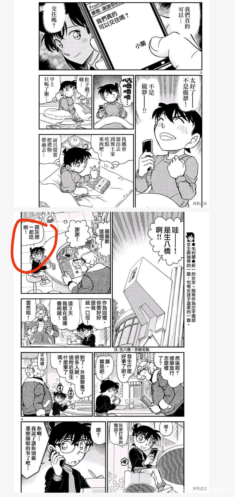

从点歪的比护眼睛到必定完不成的清水寺初吻，1l镇楼，2l开始分析。
好耶！直播！！！
2023-10-27 21:54 | 墨绯定滤ლ:抛砖引玉

红修篇的影子女主哀
从点歪的比护眼睛到必定完不成的清水寺初吻。
一、故意点歪的比护眼睛。
昨天看完了吧内大佬比护分析，结合南英大佬的红修篇分析，突然想到了一点之前没有想到的地方，红修篇的前置挂件篇其实和正篇联系的非常紧密。也对，其实两个本来就是所谓的“恋爱篇章”，联系着上下篇章的情感。
首先青山刚昌用了极大的篇幅去找灰原哀的挂件。那么为什么呢？因为红修篇要发新兰糖，所以在挂件篇先端个水吗？我一直在思考着这个问题，直到昨天晚上突然想通，挂件篇的眼睛就是是故意的，柯南这小子宁愿放弃去修学旅行，也要画歪那个眼睛，从漫画中可以看出比护挂件的眼睛并不难修，就是一个小墨点，柯南的枪法还有他徒手画圆的能力，随便点点也不会歪。
青山刚昌写柯南感情一向喜欢藏着写，那这个点歪的眼睛就是他故意泄露出来的线索，画龙点睛。首先我们看看点歪的眼睛可能会导致什么后果，这点要站在柯南的角度想问题，故意画歪的导致灰原哀暴怒，解药拿不到。但是他干了件什么事，就是故意画歪了还要找人家讨解药。
这就颇有点耍赖的性质了，柯南并不是一个功亏一篑的人，正常人为了解药拿到被弄掉眼睛的比护挂件会怎么做，选项一:洗干净送回去，不做修改 ，在对方伤心时提出补救选项。选项二:提前修补眼睛部分，讨好对方，趁机提出要解药。
从点歪的比护眼睛到必定完不成的清水寺初吻。
一、故意点歪的比护眼睛。
昨天看完了吧内大佬比护分析，结合南英大佬的红修篇分析，突然想到了一点之前没有想到的地方，红修篇的前置挂件篇其实和正篇联系的非常紧密。也对，其实两个本来就是所谓的“恋爱篇章”，联系着上下篇章的情感。
首先青山刚昌用了极大的篇幅去找灰原哀的挂件。那么为什么呢？因为红修篇要发新兰糖，所以在挂件篇先端个水吗？我一直在思考着这个问题，直到昨天晚上突然想通，挂件篇的眼睛就是是故意的，柯南这小子宁愿放弃去修学旅行，也要画歪那个眼睛，从漫画中可以看出比护挂件的眼睛并不难修，就是一个小墨点，柯南的枪法还有他徒手画圆的能力，随便点点也不会歪。
青山刚昌写柯南感情一向喜欢藏着写，那这个点歪的眼睛就是他故意泄露出来的线索，画龙点睛。首先我们看看点歪的眼睛可能会导致什么后果，这点要站在柯南的角度想问题，故意画歪的导致灰原哀暴怒，解药拿不到。但是他干了件什么事，就是故意画歪了还要找人家讨解药。
这就颇有点耍赖的性质了，柯南并不是一个功亏一篑的人，正常人为了解药拿到被弄掉眼睛的比护挂件会怎么做，选项一:洗干净送回去，不做修改 ，在对方伤心时提出补救选项。选项二:提前修补眼睛部分，讨好对方，趁机提出要解药。
2023-11-20 20:26 | 贴吧用户_a171GGM:回复 墨绯定滤ლ :也可能是另外一种情况，只要自己画歪了，就可以让对方对自己肆无忌惮的生气，而不是因为挂件的损伤不开心2023-11-20 20:30 | 贴吧用户_a171GGM:回复 墨绯定滤ლ :后面的请求解药说不定会类似于，反正我都因为这个表面理由努力了这么久，也不差这一步了，说不定她就给我了呢？2023-11-25 02:42 | 瑀珊0209:三小只真的好可爱
柯南选了有点离谱的第三个选项:故意画歪，标记领地，耍赖要解药。
对，他辛辛苦苦忙活了几话，最后的选择却包含了情感部分，他有点吃比护醋 ，又是跳海，又是趴车底拿到的挂件，最后时刻居然选择了充满情感的那个，那就是我要证明我比挂件重要，就算画歪了你也得给我解药。
啧啧啧，这么一解读，是不是恃宠而骄的感觉就出来了。小哀心软，伦敦篇柯南想去玩，就算没这么求她，她也给了，一开始柯南就笃定自己拿得到解药。
但是他在最后拿到解药的时刻，却选择了故意惹恼小哀，降低自己去修学旅行的可能性，这其中含义就很值得商榷了。
而且柯南真把人惹恼了，其实也不是很失望不能去修学旅行。青山刚昌给出柯南的内心想法是果然还是不得不放弃修学旅行啊，让别人知道工藤新一还活着也挺危险的...
不要小看这句os，他又是跳海，又是趴车底，付出极大代价，但是居然得不到解药。换一般人早就非常沮丧失望，居然这都不行吗，我付出这么大代价，都不能要颗解药？
但柯南这里失望的含义不多，他考虑到了安全问题，而且那句果然就泄露了侦探的心思，他知道点歪眼睛会导致小哀生气，虽然哄哄也就好了 ，但是修学旅行不一定能赶上，宣示主权的想法，画歪眼睛的那一瞬间盖过了去修学旅行，而且他早有预料过，所以并不十分失望。
修学旅行也并不是非要今天就确定，小哀气消了，他照样拿得到解药，但在这里柯南首先选择了放弃。还是小哀的主动成全，让他实现了能够去修学旅行的愿望。
这短短几个格子里哀的表情也很值得细品，从恼怒埋怨到惊讶再到担忧和悲伤，最后她压抑着自己的感情，故作恼怒的揪住柯南的耳朵，给了柯南去修学旅行的解药。
她其实不生气了，看到心爱男孩为了自己那么拼命寻回挂件，甚至都感冒那刻，她心软了。但此刻还是要故作恼怒给他解药，这里的恼怒其实是在压抑自己内心的情感。
这里和挂件篇的一开始哀拒绝柯南故作殷勤的讨好情感相承，她在吃醋，喜欢的男孩对自己那么讨好，但是却是为了另外一个女人。
这里青山老贼给了一堆省略号，即使如此，即使如此。她还是想实现他的愿望，在那几个省略号之间，哀还是决定实现他的愿望，代价是压抑自己的情感，这是整个红修篇哀情感的基调。
这里柯南新一大小号同时回应了哀的要求，好好，我知道了......不过这里，听是听进去了，做不做得到是另外一回事对吧，笑。接下来围绕着红修篇的影子女主哀小姐即将在工藤新一的心底出没。
对，他辛辛苦苦忙活了几话，最后的选择却包含了情感部分，他有点吃比护醋 ，又是跳海，又是趴车底拿到的挂件，最后时刻居然选择了充满情感的那个，那就是我要证明我比挂件重要，就算画歪了你也得给我解药。
啧啧啧，这么一解读，是不是恃宠而骄的感觉就出来了。小哀心软，伦敦篇柯南想去玩，就算没这么求她，她也给了，一开始柯南就笃定自己拿得到解药。
但是他在最后拿到解药的时刻，却选择了故意惹恼小哀，降低自己去修学旅行的可能性，这其中含义就很值得商榷了。
而且柯南真把人惹恼了，其实也不是很失望不能去修学旅行。青山刚昌给出柯南的内心想法是果然还是不得不放弃修学旅行啊，让别人知道工藤新一还活着也挺危险的...
不要小看这句os，他又是跳海，又是趴车底，付出极大代价，但是居然得不到解药。换一般人早就非常沮丧失望，居然这都不行吗，我付出这么大代价，都不能要颗解药？
但柯南这里失望的含义不多，他考虑到了安全问题，而且那句果然就泄露了侦探的心思，他知道点歪眼睛会导致小哀生气，虽然哄哄也就好了 ，但是修学旅行不一定能赶上，宣示主权的想法，画歪眼睛的那一瞬间盖过了去修学旅行，而且他早有预料过，所以并不十分失望。
修学旅行也并不是非要今天就确定，小哀气消了，他照样拿得到解药，但在这里柯南首先选择了放弃。还是小哀的主动成全，让他实现了能够去修学旅行的愿望。
这短短几个格子里哀的表情也很值得细品，从恼怒埋怨到惊讶再到担忧和悲伤，最后她压抑着自己的感情，故作恼怒的揪住柯南的耳朵，给了柯南去修学旅行的解药。
她其实不生气了，看到心爱男孩为了自己那么拼命寻回挂件，甚至都感冒那刻，她心软了。但此刻还是要故作恼怒给他解药，这里的恼怒其实是在压抑自己内心的情感。
这里和挂件篇的一开始哀拒绝柯南故作殷勤的讨好情感相承，她在吃醋，喜欢的男孩对自己那么讨好，但是却是为了另外一个女人。
这里青山老贼给了一堆省略号，即使如此，即使如此。她还是想实现他的愿望，在那几个省略号之间，哀还是决定实现他的愿望，代价是压抑自己的情感，这是整个红修篇哀情感的基调。
这里柯南新一大小号同时回应了哀的要求，好好，我知道了......不过这里，听是听进去了，做不做得到是另外一回事对吧，笑。接下来围绕着红修篇的影子女主哀小姐即将在工藤新一的心底出没。
2023-10-28 00:49 | bearaven:大小号这个很有意思。为什么理应是小号的柯作为背后灵出现了？正如南英的分析，“你真的是工藤新一吗？”2023-10-28 01:36 | 折越棱镜♋:我觉得青山老贼想表达的是：工藤新一就是江户川柯南。同理回复小哀的既是江户川柯南也是工藤新一。2023-10-28 21:11 | 55🌌:楼主分析的好棒，看的我磕生磕死2023-11-02 05:01 | 贴吧用户_0CEt5VS:这个揪耳朵就是恋爱喜剧的精髓所在，虽然疼，但是这意味着哀要松口了。这就是拉扯，在拉扯中两个人的关系越来越肆无忌惮

直播直播
插楼
第二部分意兴阑珊的鲨鱼
红修篇对于新兰来说是很怪味的糖。非常非常怪，新一对兰的第一句话居然是不要离我太近？注意，这里的不要离我太近，结合后文完全是因为哀的嘱咐，而且他故意咳了两声，这里的咳嗽也很有意思，在挂件篇，他的喷嚏得到了哀的解药，完全是因为真情流露。这里的咳嗽虚情假意，是为了离兰远点，按照哀的嘱托。
哀的嘱咐不放在挂件篇，而是放到红修篇，青山就是为了玩这手，看似新兰浓情蜜意，但就是要让新一时不时想起哀。
其实这里是很炸裂的，因为青梅竹马的“恋人”就在身边，但高兴并没有冲掉新一的理智，他的脑海里时不时想起哀的嘱托。而且最搞笑的是，按照工藤新一理解的哀亲密接触的定义，兰撞到他身上，他嫌太亲密，故意拉开距离。
兰挽住他胳膊时候，他的内心os是不好，太高兴了。乍一眼看过去是新兰糖，但仔细品味，就觉得很怪了，什么情况下会用到不好这个字？必然是提醒自己需要从某件事抽离的时候。
这个不好就暗含着工藤新一的担忧，他觉得兰挽他胳膊也是太亲密的行为。在兰挽他胳膊的时候，他的脑海里比起高兴，第一反应还是不好？想到了哀的嘱咐，不可以太亲热哦。
不过这一点青山鸡贼，他放在了第一天药效失效的时候才点出了哀的嘱咐。所以前面，你要说是新兰糖那就是吧。
这里还有一点值得注意，那就是拍照时新一意兴阑珊的眼睛。一方面他确实怀念着高中生的日常，但另外一方面，在同学们搞笑拍照的时候，他提不起兴致。
结合前后文，柯南在和小兰所谓“亲密”接触的时候都要想一想小哀，虽然青山藏着写，但是新一确实这么干了。
被撞到要拉开距离，挽手要想不好，晚上睡觉前，同学问他跟兰亲没亲，这家伙在想什么，在想要遵守哀的要求好辛苦啊。人家平次在拼命给他圆场子，柯南魂游天外，完全没想到自己跟兰根本没亲，服部这小子在说什么啊，这种正常的恋爱喜剧桥段压根没出现。
这也是我为什么说哀是影子女主，她看似没有出现，只出现在了新一的回忆里，但她的这四点嘱咐，确实贯穿了整个红修篇。新一时不时就要想起哀的吩咐。
但这并不是说新一就一定会遵守哀的吩咐，这里更多是一种情感上的遵从，他时不时想起就足够炸裂。人家问你亲没亲，你在想另外一个女孩，连哀没说必须要遵守的第四点，他都牢牢记住了，注意力都不在伦敦告白这事上，仔细扒开暗线，哀的存在感就特别强了，毕竟新一在红修篇时不时就要想一想。
红修篇对于新兰来说是很怪味的糖。非常非常怪，新一对兰的第一句话居然是不要离我太近？注意，这里的不要离我太近，结合后文完全是因为哀的嘱咐，而且他故意咳了两声，这里的咳嗽也很有意思，在挂件篇，他的喷嚏得到了哀的解药，完全是因为真情流露。这里的咳嗽虚情假意，是为了离兰远点，按照哀的嘱托。
哀的嘱咐不放在挂件篇，而是放到红修篇，青山就是为了玩这手，看似新兰浓情蜜意，但就是要让新一时不时想起哀。
其实这里是很炸裂的，因为青梅竹马的“恋人”就在身边，但高兴并没有冲掉新一的理智，他的脑海里时不时想起哀的嘱托。而且最搞笑的是，按照工藤新一理解的哀亲密接触的定义，兰撞到他身上，他嫌太亲密，故意拉开距离。
兰挽住他胳膊时候，他的内心os是不好，太高兴了。乍一眼看过去是新兰糖，但仔细品味，就觉得很怪了，什么情况下会用到不好这个字？必然是提醒自己需要从某件事抽离的时候。
这个不好就暗含着工藤新一的担忧，他觉得兰挽他胳膊也是太亲密的行为。在兰挽他胳膊的时候，他的脑海里比起高兴，第一反应还是不好？想到了哀的嘱咐，不可以太亲热哦。
不过这一点青山鸡贼，他放在了第一天药效失效的时候才点出了哀的嘱咐。所以前面，你要说是新兰糖那就是吧。
这里还有一点值得注意，那就是拍照时新一意兴阑珊的眼睛。一方面他确实怀念着高中生的日常，但另外一方面，在同学们搞笑拍照的时候，他提不起兴致。
结合前后文，柯南在和小兰所谓“亲密”接触的时候都要想一想小哀，虽然青山藏着写，但是新一确实这么干了。
被撞到要拉开距离，挽手要想不好，晚上睡觉前，同学问他跟兰亲没亲，这家伙在想什么，在想要遵守哀的要求好辛苦啊。人家平次在拼命给他圆场子，柯南魂游天外，完全没想到自己跟兰根本没亲，服部这小子在说什么啊，这种正常的恋爱喜剧桥段压根没出现。
这也是我为什么说哀是影子女主，她看似没有出现，只出现在了新一的回忆里，但她的这四点嘱咐，确实贯穿了整个红修篇。新一时不时就要想起哀的吩咐。
但这并不是说新一就一定会遵守哀的吩咐，这里更多是一种情感上的遵从，他时不时想起就足够炸裂。人家问你亲没亲，你在想另外一个女孩，连哀没说必须要遵守的第四点，他都牢牢记住了，注意力都不在伦敦告白这事上，仔细扒开暗线，哀的存在感就特别强了，毕竟新一在红修篇时不时就要想一想。
2023-10-27 22:39 | 宽待人严律己🌹:修学篇新一确实感冒了，咳嗽是真的，不过73画新一推开小兰确实非常扭曲，他完全可以不这样画的，这里是老贼一贯的似是而非的画法2023-10-27 22:43 | 墨绯定滤ლ:回复 aptx甜瓜 :我不是说感冒是假的，但这里他故意表现了咳嗽，强调的是咳嗽这个属性，不然在之后的篇章里青山可以让新一咳一两声，画在这里就是为了强调推开这个属性。2023-10-27 23:41 | 长大后可水了:楼主你少圈了一个咳嗽，青山在两个分镜都强调了咳嗽2023-10-28 05:59 | 墨绯定滤ლ:回复 长大后可水了 :哈哈他咳两声更刻意了，后面破案时又不咳了2023-11-25 02:46 | 瑀珊0209:还有个很好笑的点在哀提要求时说不能太亲热，这是第四点，柯南并没有纠结为什么不能太亲热，反而是问：“你这已经是第四点了吧？”他根本没想太多。


cy，很有意思的解读。
cy，赶上直播了
这里接的是案件，因为我们暂时分析的是情感 ，所以暂时回到日常上来。新一并不完全是因为兰来这次修学旅行的，这也就导致兰在第二天怒气冲冲的来到了新一的面前，特别大力的放餐盘。
世良和新一在把杀人案件当下饭佐料，这里园子和兰的举动很明显，是来要一个说法。因为兰的行动逻辑始终如一，她在等着新一给她一个说法。
这里新一的辩解其实很苍白，是我的声音但是不是我。只要兰再往前面推进一步，真相就在面前了，那是谁呢？
她始终没有再更近一步探知真相，又缩回了恋爱这个范畴内。想的是，新一也想kiss吗？其实这里的塑造并不违和，兰在这里不关心说出这句话的新一到底是谁，而是更关心恋爱的方面，更加注重他说了这个，所以真新一假新一不重要，兰更想借此机会逼问出他的想法，所以说这话的新一是谁重要吗？他不重要。
因此线索那么明显，兰也一次次放过，对面的世良就抓住了本质，为什么要把袖子挽起来，侦探和鲨鱼的区别也就正体现在此处。
在兰os完要不要接吻之后，马上就接了高中那群男生的调侃。换漫画早期，柯南早就恼怒上了，看哪里呢，混蛋。但新一在这里的态度不咸不淡甚至有点敷衍，也是很多人觉得新一下头的地方。
我仔细想了想这里的几种可能性，换其他人早就一拳揍过去了。被人调侃自己喜欢的女孩大不大。那么可能性一新一潜意识里对兰的占有欲下降了，也就是青山开篇就摆出来的，近距离看不习惯了，他更多在情感上把兰当做了兰内酱。可能性二，他心不在焉，压根没想着兰的事情，心思都在案件上，可能性三，他无所谓别人调侃他喜欢的人（这点排除。）
我在这里更倾向于第四种可能性，一和二的混合体。新一心不在焉放空的时候，潜意识里把自己当柯南，新一的女朋友关他江户川柯南什么事情。所以下一幕来了个经典的啊咧咧。
园子发过来那张沖田和兰的照片还是短暂激起了新一的占有欲，对，存在感超级强烈的小哀又出来了，让兰和沖田接触的那张护身符里的铁诸羽照片，虽然这里还没有揭露真相，又是暗搓搓飘过的小哀元素。
世良和新一在把杀人案件当下饭佐料，这里园子和兰的举动很明显，是来要一个说法。因为兰的行动逻辑始终如一，她在等着新一给她一个说法。
这里新一的辩解其实很苍白，是我的声音但是不是我。只要兰再往前面推进一步，真相就在面前了，那是谁呢？
她始终没有再更近一步探知真相，又缩回了恋爱这个范畴内。想的是，新一也想kiss吗？其实这里的塑造并不违和，兰在这里不关心说出这句话的新一到底是谁，而是更关心恋爱的方面，更加注重他说了这个，所以真新一假新一不重要，兰更想借此机会逼问出他的想法，所以说这话的新一是谁重要吗？他不重要。
因此线索那么明显，兰也一次次放过，对面的世良就抓住了本质，为什么要把袖子挽起来，侦探和鲨鱼的区别也就正体现在此处。
在兰os完要不要接吻之后，马上就接了高中那群男生的调侃。换漫画早期，柯南早就恼怒上了，看哪里呢，混蛋。但新一在这里的态度不咸不淡甚至有点敷衍，也是很多人觉得新一下头的地方。
我仔细想了想这里的几种可能性，换其他人早就一拳揍过去了。被人调侃自己喜欢的女孩大不大。那么可能性一新一潜意识里对兰的占有欲下降了，也就是青山开篇就摆出来的，近距离看不习惯了，他更多在情感上把兰当做了兰内酱。可能性二，他心不在焉，压根没想着兰的事情，心思都在案件上，可能性三，他无所谓别人调侃他喜欢的人（这点排除。）
我在这里更倾向于第四种可能性，一和二的混合体。新一心不在焉放空的时候，潜意识里把自己当柯南，新一的女朋友关他江户川柯南什么事情。所以下一幕来了个经典的啊咧咧。
园子发过来那张沖田和兰的照片还是短暂激起了新一的占有欲，对，存在感超级强烈的小哀又出来了，让兰和沖田接触的那张护身符里的铁诸羽照片，虽然这里还没有揭露真相，又是暗搓搓飘过的小哀元素。
前两部分暂时告一段落，后面我更想浅浅结合一下其他篇章聊聊，青山作品里的创作逻辑，为什么要志始志终，预计还有两个篇章，上午先更到这里。
插个眼
cy
cy

第三部分 藏于新兰感情线背后的影子
这一部分杂谈较多，添加较多个人主观分析。首先我们简单的来梳理一下新兰的感情线。对，作品创作是要有大纲的，很多党争的观众都会认为党争作者都是脚踩西瓜皮，写到哪里是哪里，最后结局全看作者兴致，但实际上不然。
作者对他笔下的人物是有偏好的，而且感情线该进该退，他是有一个整体把握。比如隔壁辉夜整烂活的大赤老师，石弥燕党争一开，我就知道燕学姐一定会拒绝石上，这点是一开始就定好的，因为在这个党争前期花了太多笔墨来虐弥子，要真要凑石燕，不该这么做，当然大赤老师是个没有细纲的作者，所以他后面开始疯狂整烂活，但整体还是要归于大纲。
这点青山不然，他是个细节狂魔，能够回收前后二十年的眼镜超人伏笔，还有双鲨论，这就证明了青山是有能力写好一个人物的，而且他确实在感情线大纲上没有偏离。
对，虽然青山老师看似端水，但是他端给擦的水和端给新兰的水，不是一个量级。我一口气看完新兰感情线名篇之后，发现青山对于新兰的感情线设定非常诡异。
文艺作品，以爱情为主题的作品，通常男女主感情线呈现螺旋式上升，也就是跌涨跌涨，但总体往上升，中途波荡起伏，但感情浓度得往上升，得通过各种事情增进男女主对彼此的了解和感情才对。
但是新兰的感情戏完全不然，第一话云霄飞车的感情戏如果能够打70分，到红修篇我只能给他们打65分，中间经历了那么多事件，新一对兰的了解确实往上走了，但是对兰的情感呢？我认为是往下跌的。之前觉得告白对兰不好，但伦敦篇为了线索，就随意把告白说出口。
而兰对新一的了解永远在原地踏步，开局多少分，现在还是多少分，可能感情浓度稍微往上走了点，但她还是对福尔摩斯和探案不感兴趣，红修篇依旧游离在案件之外，等着新一回来。
她从来没有想要走入过新一的世界，所以红修篇依旧在等待着错过了属于sr的初吻。她在红修篇开局在等，中期平次说她跟新一kiss过的时候，兰姐十分暴躁的将餐盘放在桌上的时候也在等，中期新一探案的时候也在等。
可以说她对新兰这份感情其实挺消极，永远在被动等待中错过新一。新兰感情的浓度其实是不断往下跌的。
我从很久之前就在想，青山真的要这么设计主cp吗？高佐，平和，快青，他明明挺擅长设计感情戏，但对这对主cp的设计，却是完全不符合常理的。
这里插播一个小知识，一般感情戏作者飙太快了，会使用重置，将感情戏重置为上个阶段或者上上个阶段，让cp双方对彼此的印象降低，然后又使用反转手段让彼此感情更进一步。
这种王道塑造我在sr名篇完全看不到，危命篇算是新兰感情巅峰，再往后就是一路破碎了。真正解构新兰爱情的是死罗神篇，结合兰对纽约篇和伦敦篇的印象，兰回忆中的新一根本就不是真实存在的新一，那个新一结合了她的幻想和真实的新一融合在一起，形成了她心中神化的新一。
所以死罗神根本不存在崩掉兰的人设，也不存在什么青山塑造的很差劲，她就是这么个人设，一旦理解兰爱的不是新一，只是新一这个符号之后，她的很多行为就都通顺了。
兰为什么吃基德代餐，因为基德伪装的新一也符合她心目中新一的符号啊。危命篇黑衣骑士为什么不拒绝“新出医生”，那也符合她心目中新一的符号。
拉窗帘？不好意思，那也是她心目中幻想的新一。她的爱情是真挚的，可惜并不是爱着新一本人，这个逻辑盘下来，她的人物形象就通顺了，爱着心中她幻想出来的那个新一，拒绝接受真实的新一跟她想象中不一样的可能性。
所以危命篇，她看到那个失忆的“新一”，就算不是恋人，作为青梅竹马也该问几句吧，她不问也不理，跑去求神拜佛。
哈，那回答和叶的那几句话，就很值得深思了，和叶说看到喜欢的人失忆的情感，兰完全体会不到。这里青山就在划重点，提醒读者新兰的感情一开始就存在着瑕疵。
所以新兰爱情的解构并不由小哀开始，而是由于兰一开始就没有爱上过真实的新一。并不是柯南爱上小哀，所以这段感情戏要奔溃瓦解了，而是一开始，在柯南并没有对哀动心前，这段感情就是虚构的。
兰不能真实的接受新一的样子，所以她期待柯南回答自己，他不是新一。她在这之后长期采取掩耳盗铃的方法，线索送到唇边，红修篇只要再问一句，到底是谁说出了我们亲吻了呢？她不肯问，她在等，并且期待着回来的是她心中的新一，那个并不存在的完美新一。
本质上兰对新一的爱情和追偶像一致，她爱上了她心目中对新一人设的幻想。不知道大家了解不了解三次元追偶像，追偶像的路子就是公司贩卖偶像完美人设，而追星族爱上包装出来的完美幻梦。
新兰感情戏从正常恋爱喜剧来推是完全不通的，但是你要是从女友粉爱男偶像这个角度来推，通畅得不得了。兰拉窗帘的时候觉得新一应该是这样，我比你了解他更多，换个方式表达，最了解哥哥的是我，是不是有追星那味了。
这一部分杂谈较多，添加较多个人主观分析。首先我们简单的来梳理一下新兰的感情线。对，作品创作是要有大纲的，很多党争的观众都会认为党争作者都是脚踩西瓜皮，写到哪里是哪里，最后结局全看作者兴致，但实际上不然。
作者对他笔下的人物是有偏好的，而且感情线该进该退，他是有一个整体把握。比如隔壁辉夜整烂活的大赤老师，石弥燕党争一开，我就知道燕学姐一定会拒绝石上，这点是一开始就定好的，因为在这个党争前期花了太多笔墨来虐弥子，要真要凑石燕，不该这么做，当然大赤老师是个没有细纲的作者，所以他后面开始疯狂整烂活，但整体还是要归于大纲。
这点青山不然，他是个细节狂魔，能够回收前后二十年的眼镜超人伏笔，还有双鲨论，这就证明了青山是有能力写好一个人物的，而且他确实在感情线大纲上没有偏离。
对，虽然青山老师看似端水，但是他端给擦的水和端给新兰的水，不是一个量级。我一口气看完新兰感情线名篇之后，发现青山对于新兰的感情线设定非常诡异。
文艺作品，以爱情为主题的作品，通常男女主感情线呈现螺旋式上升，也就是跌涨跌涨，但总体往上升，中途波荡起伏，但感情浓度得往上升，得通过各种事情增进男女主对彼此的了解和感情才对。
但是新兰的感情戏完全不然，第一话云霄飞车的感情戏如果能够打70分，到红修篇我只能给他们打65分，中间经历了那么多事件，新一对兰的了解确实往上走了，但是对兰的情感呢？我认为是往下跌的。之前觉得告白对兰不好，但伦敦篇为了线索，就随意把告白说出口。
而兰对新一的了解永远在原地踏步，开局多少分，现在还是多少分，可能感情浓度稍微往上走了点，但她还是对福尔摩斯和探案不感兴趣，红修篇依旧游离在案件之外，等着新一回来。
她从来没有想要走入过新一的世界，所以红修篇依旧在等待着错过了属于sr的初吻。她在红修篇开局在等，中期平次说她跟新一kiss过的时候，兰姐十分暴躁的将餐盘放在桌上的时候也在等，中期新一探案的时候也在等。
可以说她对新兰这份感情其实挺消极，永远在被动等待中错过新一。新兰感情的浓度其实是不断往下跌的。
我从很久之前就在想，青山真的要这么设计主cp吗？高佐，平和，快青，他明明挺擅长设计感情戏，但对这对主cp的设计，却是完全不符合常理的。
这里插播一个小知识，一般感情戏作者飙太快了，会使用重置，将感情戏重置为上个阶段或者上上个阶段，让cp双方对彼此的印象降低，然后又使用反转手段让彼此感情更进一步。
这种王道塑造我在sr名篇完全看不到，危命篇算是新兰感情巅峰，再往后就是一路破碎了。真正解构新兰爱情的是死罗神篇，结合兰对纽约篇和伦敦篇的印象，兰回忆中的新一根本就不是真实存在的新一，那个新一结合了她的幻想和真实的新一融合在一起，形成了她心中神化的新一。
所以死罗神根本不存在崩掉兰的人设，也不存在什么青山塑造的很差劲，她就是这么个人设，一旦理解兰爱的不是新一，只是新一这个符号之后，她的很多行为就都通顺了。
兰为什么吃基德代餐，因为基德伪装的新一也符合她心目中新一的符号啊。危命篇黑衣骑士为什么不拒绝“新出医生”，那也符合她心目中新一的符号。
拉窗帘？不好意思，那也是她心目中幻想的新一。她的爱情是真挚的，可惜并不是爱着新一本人，这个逻辑盘下来，她的人物形象就通顺了，爱着心中她幻想出来的那个新一，拒绝接受真实的新一跟她想象中不一样的可能性。
所以危命篇，她看到那个失忆的“新一”，就算不是恋人，作为青梅竹马也该问几句吧，她不问也不理，跑去求神拜佛。
哈，那回答和叶的那几句话，就很值得深思了，和叶说看到喜欢的人失忆的情感，兰完全体会不到。这里青山就在划重点，提醒读者新兰的感情一开始就存在着瑕疵。
所以新兰爱情的解构并不由小哀开始，而是由于兰一开始就没有爱上过真实的新一。并不是柯南爱上小哀，所以这段感情戏要奔溃瓦解了，而是一开始，在柯南并没有对哀动心前，这段感情就是虚构的。
兰不能真实的接受新一的样子，所以她期待柯南回答自己，他不是新一。她在这之后长期采取掩耳盗铃的方法，线索送到唇边，红修篇只要再问一句，到底是谁说出了我们亲吻了呢？她不肯问，她在等，并且期待着回来的是她心中的新一，那个并不存在的完美新一。
本质上兰对新一的爱情和追偶像一致，她爱上了她心目中对新一人设的幻想。不知道大家了解不了解三次元追偶像，追偶像的路子就是公司贩卖偶像完美人设，而追星族爱上包装出来的完美幻梦。
新兰感情戏从正常恋爱喜剧来推是完全不通的，但是你要是从女友粉爱男偶像这个角度来推，通畅得不得了。兰拉窗帘的时候觉得新一应该是这样，我比你了解他更多，换个方式表达，最了解哥哥的是我，是不是有追星那味了。
2023-10-28 02:29 | 贴吧用户_Q57Pt88:石弥这个例子太对了。我看辉夜的时候也是一眼看出来最后一定是走弥子线，作者的心思其实很明显的（但他最后画出来的石弥真的很烂）2023-11-02 09:15 | 没字也行:公司贩卖偶像完美人设---在新兰线快要崩溃的时候，嗑新兰的江户川柯南就蹦出来维护新一人设了，每一次.....柯南是会运营的2023-11-02 09:18 | 墨绯定滤ლ:回复 没字也行 :运营不好柯子就没命了，他脑子里，兰知道了等于黑方都知道了，然后大家一起玩完

兰的爱充斥着粉红泡泡和不理性，这在cp的构建上是大雷。通常作者为了打破对于角色之间的幻想，都会在一开始让有意构建cp的双方，接触到彼此不完美的那一面。
但是新兰正相反，兰见到了太多她幻想出来新一的那一面。那么如果用兰是女友粉这个角度来解释，新兰关系的结束就不在于新一“塌房”，而在于打破了她心目中对新一的幻想，那她就会像死罗神那样，自动远离新一。
拿秋之回忆系列来举例，秋之回忆2，一开始就要隐藏真女主萤的心思，同样一开始空降女友，萤的塑造明显讨喜得多 ，而且留出了足够的塑造空间，有一整个雪萤篇来塑造她跟男主的羁绊。
但樱花篇纽约篇一出，都埋下了暗雷，没有塑造的空间了啊，所谓青梅竹马的战斗力也就这样，不可能再编造出更多的回忆让新兰产生更多的羁绊，这才是青山毒的地方，给了篇章，但是完全卡死了新兰更进一步，更了解彼此的可能性。
青山刚昌，这也在你的预料之中吗？
Ps:我居然写了快两千字还没进入第三篇的正菜，柯哀篇是如何在新兰篇埋暗线的。
但是新兰正相反，兰见到了太多她幻想出来新一的那一面。那么如果用兰是女友粉这个角度来解释，新兰关系的结束就不在于新一“塌房”，而在于打破了她心目中对新一的幻想，那她就会像死罗神那样，自动远离新一。
拿秋之回忆系列来举例，秋之回忆2，一开始就要隐藏真女主萤的心思，同样一开始空降女友，萤的塑造明显讨喜得多 ，而且留出了足够的塑造空间，有一整个雪萤篇来塑造她跟男主的羁绊。
但樱花篇纽约篇一出，都埋下了暗雷，没有塑造的空间了啊，所谓青梅竹马的战斗力也就这样，不可能再编造出更多的回忆让新兰产生更多的羁绊，这才是青山毒的地方，给了篇章，但是完全卡死了新兰更进一步，更了解彼此的可能性。
青山刚昌，这也在你的预料之中吗？
Ps:我居然写了快两千字还没进入第三篇的正菜，柯哀篇是如何在新兰篇埋暗线的。
2023-10-28 02:37 | 随意♬飘荡:新兰的告白是被迫的，而亲脸是被同学们起哄的，根本就不是感情自然而然发展来的，反而充满了不纯粹2023-10-28 06:18 | 墨绯定滤ლ:没有一项是新一主动的

楼主和我的想法很一致。新兰感情戏的“问题”和柯哀其实半毛钱关系没有，两个人的感情就是实打实的有裂缝，缝还挺大。而当新一变为柯南，从日常生活中的惯性里脱离出来再审视一下这段感情，可以说发现问题是迟早的事情。
2023-10-28 02:36 | 贴吧用户_Q57Pt88:兰自始自终只是需要一个神像，来安定自己的心理，来让自己获得实感。而新一充当了这个神像。这就解释了她的很多行为，比如否定新一的理想，这就像饭圈发现自己家哥哥人设塌了想骗自己。2023-10-28 02:37 | 墨绯定滤ლ:追星就是不怕偶像塌房，怕偶像崩人设，新兰感情戏的根本问题就是兰接受不了真实的新一。2023-10-28 02:39 | 贴吧用户_Q57Pt88:回复 墨绯定滤ლ :很精准
三、新兰篇中的暗线柯哀
第三部分包括大量杂谈，请谨慎观看。
在看完m26之后，我一直在构思着新兰要怎么样才能结局，别笑，我是个擦党。拿恋爱游戏举例的话，哀现在已经是真女主了，就算柯南作为推理作品中的恋爱元素再稀释，它依旧包含着大量恋爱作品。
所谓真女主的定义，是攻略谁都绕不过的女主角。拿擅长搞党争的丸户举例，他的每一部作品都包含着党争元素，恋爱作品为什么最忌讳半场开香槟？因为确定关系了就没得写了啊，读者不想看小情侣你侬我侬水剧情，要看就是一个惊心动魄，这就是为什么读者骂党争作者不当人，但又看得特别带劲的原因，看得就是情感暧昧，彼此拉扯。
半场开香槟，往往意味着这部分拉扯得由别的角色承担，那往往也就是主角最后的选择。
先确定关系的那位在剧情上承担的作用，往往是烟雾弹。
在眼镜护身符之前，柯南的感情线既可以看做是共通线，也可以看做是兰线，毕竟确定关系了不是吗？
但m26这个护身符盖章一出来，我就意识到青山老贼在玩诡叙。眼镜护身符这东西放在恋爱游戏里几乎等于共通线分歧点了。
男主给谁就进了谁的线路，因为按照名柯世界线的逻辑，护身符不可能再给第二个，除非青山有意崩掉亲儿子人设，让他化身时间管理大师。
选择其他女性作为感情线结尾，那么就要解构眼镜护身符。眼镜护身符的解构难度极大，第三颗银弹保送哀到主线结尾。
眼镜护身符保送哀到情感线结尾。就算青山在这个分支上再画男主和别的女性的感情线，也是在哀线这个范畴内，离不开哀线这个大基础。
而且在m26这个柯哀情感浓度和眼镜护身符加持下，我想到的新兰所有分支都打不出完美结局。
我对所谓感情线的完美结局，就是女主角得到了幸福，且男主一心一意只爱她。但往往恋爱游戏的作品中，真男主女主就是负责阴魂不散的，只要他（她）出场，哪怕主角跟别人再蜜里调油，都绕不过那道坎，心里永远有他（她）一席之地。
在新兰感情线中，小哀就担任着这么一位如影随形的真女主。前面分析过，新兰的感情线模式是很不能理解的，双方一开始就是双向暗恋，现在确定关系了，但依旧毫无进展。
如果你不把新兰看作一对成熟cp，而是将这段感情看做一段引子，你就会发现柯哀的感情戏符合任何一部王道恋爱作品中的发展模式。而且她就是青山构想中那个阴魂不散的真女主，知道这个结论之后倒推就顺利了。
第三部分包括大量杂谈，请谨慎观看。
在看完m26之后，我一直在构思着新兰要怎么样才能结局，别笑，我是个擦党。拿恋爱游戏举例的话，哀现在已经是真女主了，就算柯南作为推理作品中的恋爱元素再稀释，它依旧包含着大量恋爱作品。
所谓真女主的定义，是攻略谁都绕不过的女主角。拿擅长搞党争的丸户举例，他的每一部作品都包含着党争元素，恋爱作品为什么最忌讳半场开香槟？因为确定关系了就没得写了啊，读者不想看小情侣你侬我侬水剧情，要看就是一个惊心动魄，这就是为什么读者骂党争作者不当人，但又看得特别带劲的原因，看得就是情感暧昧，彼此拉扯。
半场开香槟，往往意味着这部分拉扯得由别的角色承担，那往往也就是主角最后的选择。
先确定关系的那位在剧情上承担的作用，往往是烟雾弹。
在眼镜护身符之前，柯南的感情线既可以看做是共通线，也可以看做是兰线，毕竟确定关系了不是吗？
但m26这个护身符盖章一出来，我就意识到青山老贼在玩诡叙。眼镜护身符这东西放在恋爱游戏里几乎等于共通线分歧点了。
男主给谁就进了谁的线路，因为按照名柯世界线的逻辑，护身符不可能再给第二个，除非青山有意崩掉亲儿子人设，让他化身时间管理大师。
选择其他女性作为感情线结尾，那么就要解构眼镜护身符。眼镜护身符的解构难度极大，第三颗银弹保送哀到主线结尾。
眼镜护身符保送哀到情感线结尾。就算青山在这个分支上再画男主和别的女性的感情线，也是在哀线这个范畴内，离不开哀线这个大基础。
而且在m26这个柯哀情感浓度和眼镜护身符加持下，我想到的新兰所有分支都打不出完美结局。
我对所谓感情线的完美结局，就是女主角得到了幸福，且男主一心一意只爱她。但往往恋爱游戏的作品中，真男主女主就是负责阴魂不散的，只要他（她）出场，哪怕主角跟别人再蜜里调油，都绕不过那道坎，心里永远有他（她）一席之地。
在新兰感情线中，小哀就担任着这么一位如影随形的真女主。前面分析过，新兰的感情线模式是很不能理解的，双方一开始就是双向暗恋，现在确定关系了，但依旧毫无进展。
如果你不把新兰看作一对成熟cp，而是将这段感情看做一段引子，你就会发现柯哀的感情戏符合任何一部王道恋爱作品中的发展模式。而且她就是青山构想中那个阴魂不散的真女主，知道这个结论之后倒推就顺利了。
2023-10-28 06:24 | 随意♬飘荡:如果新兰是成熟的cp的话，73居然还是一再强调新一像福尔摩斯一样对爱情一窍不通，这逻辑也太诡异了。2023-10-28 06:31 | 墨绯定滤ლ:回复 随意♬飘荡 :2023-11-22 15:57 | 诩不诩:点了，举一个不太恰当的例子，（只是形式合适，人物合不上的啊！！再次叠甲，楼主把把关，不行我就删掉了）就像缘。空的妹妹线，定死在所有线里面绕不过去2023-12-19 14:23 | 机智的流氓猪:眼镜护身符这点说得是很对的。否定眼镜护身符会造成剧情相当程度的崩坏，所以这个护身符就是青山本人的明示。私以为这是目前柯哀he的最重要证据。
插一句我对mll亲脸的看法。其实我不太同意南英大大的观点“mll的亲脸(而不是大大方方回应)是一种堵嘴行为”，原因就在于mll最开始那一句心里话「新一你也想接吻吗？」。重点不仅是接吻，还有「也」这个字，为什么mll要说「也想」呢？这个「也」字对应的另一个人是谁呢？就是她自己啊，因为她听到了清水台吻别的故事后，自己想和新一接吻啊(笑)。有了这个前提，她亲脸的行为就很好理解了。她想和新一接吻，但是又不确定新一想不想接吻 (告白了不一定代表想接吻吧？)，怎样传达自己的心愿(好像红修篇最后一话的旁白就是问 传达到了吗？)又不会惹新一不高兴呢，于是她折中一下，那就亲脸上吧。这也是一种对工藤的试探。也正像吧里另一个大佬说的，mll是一个二次元里罕见的三次元人物。
另外一点是，工藤对mll的主动都是在外界刺激下产生的胜负心。只有竞争者出现时，戳破了他对自己的alpha male幻想泡泡，他才会对mll有点表示。红修篇，如果mll没有一口一个冲田，如果圆子没有给工藤发mll和冲田私会的照片，我怀疑工藤根本不会想起向mll要伦敦篇的回复(新一: 啊，对了，我好像在哪里跟mll告过白耶)。从红修篇开始他根本想都没想起过那回事，根本就像没发生一样，直到mll开始提冲田的名字。接着就是工藤不爽的表情，以及后面推理时无法集中精力(漫画里这段描写实在又俗又肤浅 我感觉像烟雾弹)。可以说，工藤在红修篇对mll的进一步表示，冲田有99.9%的功劳。
另一个刺激就是mll的亲脸试探。mll亲完后一脸无辜地说「这样。。不行吗？」，接着又是那种俗套的霸总爱上我桥段，新一脸红+心里话「光亲脸怎么行」(好像是这句)，有了mll的试探开路，叠加上跟冲田一决高下的胜负欲，他决定把两人关系推进一步，亲嘴。然后发生的事大家都知道了。(果然，心跳是因为解药的缘故；果然，还是没办法爱上你啊)
另外一点是，工藤对mll的主动都是在外界刺激下产生的胜负心。只有竞争者出现时，戳破了他对自己的alpha male幻想泡泡，他才会对mll有点表示。红修篇，如果mll没有一口一个冲田，如果圆子没有给工藤发mll和冲田私会的照片，我怀疑工藤根本不会想起向mll要伦敦篇的回复(新一: 啊，对了，我好像在哪里跟mll告过白耶)。从红修篇开始他根本想都没想起过那回事，根本就像没发生一样，直到mll开始提冲田的名字。接着就是工藤不爽的表情，以及后面推理时无法集中精力(漫画里这段描写实在又俗又肤浅 我感觉像烟雾弹)。可以说，工藤在红修篇对mll的进一步表示，冲田有99.9%的功劳。
另一个刺激就是mll的亲脸试探。mll亲完后一脸无辜地说「这样。。不行吗？」，接着又是那种俗套的霸总爱上我桥段，新一脸红+心里话「光亲脸怎么行」(好像是这句)，有了mll的试探开路，叠加上跟冲田一决高下的胜负欲，他决定把两人关系推进一步，亲嘴。然后发生的事大家都知道了。(果然，心跳是因为解药的缘故；果然，还是没办法爱上你啊)
2023-10-28 04:24 | 墨绯定滤ლ:我跟你的想法大致相同，但是还有一点不同，此时新一自认为喜欢兰，但是却对兰感受不到心动的感觉，这点我后面分析再衍生一下。
后期的柯哀互动真是越看越意思啊
新兰的恋爱戏，从小哀出场开始就是小哀开始小哀结束，中间穿插着新兰。比如危命前置剧情那七朵玫瑰，偷偷喜欢你，死罗神中，小哀爬卫生间隔间去送药。青山怕读者看不明白，还特意在变小的名侦探中安排了志保的戏份。志始志终，想要找到没有柯哀穿插的新兰戏很难，想找点不埋雷的部分也挺难。
青山在多次隐晦的提醒读者，真女主就在你身边。我玩恋爱游戏最怕这种女主了，毕竟能在非她的主场中疯狂输出，咳咳扯远了。
一旦了解到柯哀是真实暗线。危命篇的新一就是注定告不了白的，他说的新一哥哥死也要回来，但是回来之后呢？他真的还是新一吗？
红修篇多次暗示告诉读者，回来的是新一，但不完全是新一。他既是新一也是柯南，柯南将他的象征眼镜送给了另外一个女孩，那就算是新兰中也不可避免的沾染上了柯哀的色彩。
同理推论，为什么原计划是灰原主场的伦敦篇会变成新兰的草草告白专场？如果是哀主场，肯定会推柯哀感情线，上大分的那种。
因为哀出不了国，所以改变策划变成了伦敦篇的“名场面”告白。作品的大纲是定好的，临时改动就要牵一发而动全身，青山这里替换成了伦敦篇，意味着伦敦篇无论是新兰告白还是说推柯哀，不影响整个作品的结构。
推柯哀=等于新兰埋雷告白。只能说青山好狠，他在一开始就打定主意，新兰是烟雾弹，柯哀才是本质，这样的替换完全不影响后续剧情的走向，这样才能解释他为什么非要在新兰篇埋雷告白。
伦敦篇最后有希子的表情我也觉得耐人寻味，很多人说这里她在表达对兰不满。但我更觉得她饶有兴致的勾起唇角，丝毫不调侃新兰，提起哀的意思不是在为哀拉印象分，而是更多的是在观望，孩子，这真的是你最后的选择吗？伦敦篇经典构图，获胜者是Miss glass。
青山在多次隐晦的提醒读者，真女主就在你身边。我玩恋爱游戏最怕这种女主了，毕竟能在非她的主场中疯狂输出，咳咳扯远了。
一旦了解到柯哀是真实暗线。危命篇的新一就是注定告不了白的，他说的新一哥哥死也要回来，但是回来之后呢？他真的还是新一吗？
红修篇多次暗示告诉读者，回来的是新一，但不完全是新一。他既是新一也是柯南，柯南将他的象征眼镜送给了另外一个女孩，那就算是新兰中也不可避免的沾染上了柯哀的色彩。
同理推论，为什么原计划是灰原主场的伦敦篇会变成新兰的草草告白专场？如果是哀主场，肯定会推柯哀感情线，上大分的那种。
因为哀出不了国，所以改变策划变成了伦敦篇的“名场面”告白。作品的大纲是定好的，临时改动就要牵一发而动全身，青山这里替换成了伦敦篇，意味着伦敦篇无论是新兰告白还是说推柯哀，不影响整个作品的结构。
推柯哀=等于新兰埋雷告白。只能说青山好狠，他在一开始就打定主意，新兰是烟雾弹，柯哀才是本质，这样的替换完全不影响后续剧情的走向，这样才能解释他为什么非要在新兰篇埋雷告白。
伦敦篇最后有希子的表情我也觉得耐人寻味，很多人说这里她在表达对兰不满。但我更觉得她饶有兴致的勾起唇角，丝毫不调侃新兰，提起哀的意思不是在为哀拉印象分，而是更多的是在观望，孩子，这真的是你最后的选择吗？伦敦篇经典构图，获胜者是Miss glass。
2023-10-28 05:04 | 世界上没有真理:如果有認真看名柯的話會發現新蘭篇章都有哀的影子，為什麼要在"男女主"重要劇情上讓一個"女配"來承擔推進劇情的戲分?這就很耐人尋味了2023-10-28 05:05 | 世界上没有真理:但大多數人想不到這點都認為哀是來助攻的，"女配"不破壞反而還來助攻?毛利蘭這女主也過太爽了吧?事實證明大眾在地上一層而老賊在大氣層2023-10-28 05:52 | 墨绯定滤ლ:而且如果兰是大女主，哀应该有吃瘪剧情，可现在别说吃瘪剧情了，兰哀都没有交锋过，老贼这个设计很偏心了。2023-10-28 06:12 | 世界上没有真理:回复 墨绯定滤ლ :實際上我覺得已經蘭哀對決過了，只是老賊不是像寫和葉紅葉那樣的寫法，而是兩個女孩在處理事情以及對工藤新一的態度上，倫敦篇超級明顯，毛利蘭簡直就是個雷一下情緒崩潰一下像魔鬼一樣要把你抓出來，工藤新一跟她你追我跑跑了有30分鐘，就像倫敦篇工藤新一說的你就是個麻煩2023-10-28 06:12 | 世界上没有真理:與之對比的就是哀，又是給藥讓新一圓夢，又是神機妙算知道你會因為毛利蘭而無法回到日本，所以拜託工藤夫婦送藥好讓你回來，這可靠度這安全感秒殺毛利蘭了2023-10-28 06:17 | 墨绯定滤ლ:按这个角度看的话，兰一直都在输2023-10-28 08:15 | crjiaqiz:回复 世界上没有真理 :可以提供这种安全感的能力也一直让哀有工具人既视感。。。唉2023-10-28 09:04 | 世界上没有真理:回复 crjiaqiz :沒辦法，依老賊設定新蘭是明線柯哀是暗線，所以會讓哀看起來很像是工具人，但仔細推理的話會發現哀根本是樓主說的影子女主2023-11-02 09:21 | 没字也行:回复 世界上没有真理 : 真正的新兰线，要从兰神的视角展开。
 牛
牛赞
顶
2023-10-28 06:06 | 74yuanf:不错的
注意西瓜！

第四部分、红修篇最后的迷题，故意错过的kiss。
天狗传说和沖田的打败宿敌才能告白 ，这种箭头过于明显的debuff和buff这里姑且不提。我们来提提兰的小心思，她为什么只吻在了侧脸？
就是暗示新一接下来吻她，把主导权无限的交给别人。在同学的鼓动和起哄中，工藤新一终于起了kiss的念头，但是他有个漫长的前摇动作。
根据前面的分析，每次修学篇的“进展”前，新一都会想到小哀的嘱咐。他这里的反应也很搞笑，在前摇无比漫长的纠结之下，终于等到药效发作，这小子像是终于找到借口润了。
这里小哀是有给新一备用药的，但是新一既不惋惜那个吻，他在服部摩托车上的想法居然是没法吃。
以前那么乱来不都吃了？怎么这里没法吃了呢 ，想到了某家伙的嘱咐了吧。这里也是对哀嘱咐的回应，不管中期吐槽怎么辛苦，但至少这次工藤确实有意识遵守了哀的嘱咐，从开始到最后。
青山暗戳戳的将哀的剧情分散，让工藤新一或者说柯南，在整个红修剧情里，一直在想她或者说她的嘱咐。
开头想一次，中间和兰挽手时还在想，结尾摩托车上又想。可能漫画看起来不觉得炸裂，但是描述成文字，那就是工藤新一全程都没忘记哀的嘱咐，而且想起嘱咐的时候就会想起她的脸。
惦记着另外一个女孩的初吻怎么可能顺利，犹豫着犹豫着，感受不到对兰的心动，只能等到药效发作等个机会走。
这也是我在构思柯南感情线其他可能性延展时遇到的难题，如果要发展其他人的感情线，那哀就是关底boss 。虽然名义上上红修篇是新兰糖，但是实际上全程新一都没忘掉小哀，而且主观意识上遵守了她的约定。
啊啊，这是为什么呢，明明哀并没有跟过来，就算在这里任意妄为，她也不会知道，亲密接触这种事情，明明哀也说过无所谓的。
那，为什么呢？
而且我说发展新兰感情线就一定发展柯哀感情线，还体现在柯南枕头下的生八桥下，前一秒高兴终于跟小兰交往了，后一秒就惦记着把特产带去博士家。
青山还怕读者没注意到博士家有什么特别的地方，特意在对话中又一次点出，跟灰原一起吃哦。
明线看似新兰糖，暗线里面新一就没忘记过哀，青山老贼真是欲盖弥彰。与其说限制新兰的那个初吻是因为药效，倒不如说这是一种手法，用来暗指新一脑子里就没有忘记过哀的嘱托，他犹豫了，并且感受不到自己的心意，心跳加速居然是因为药？
这可是初吻诶，和你四岁就喜欢的女孩子初吻，你不激动？再说你亲兰犹豫的功夫，都够你给哀人工呼吸好多次了，这个b站好像有视频，感兴趣的可以去看看。
新兰错过的初吻，一个靠等，拉领带那个亲侧脸，我都替兰姐着急，A上去啊，别等了，你们真亲上了，我就可以不用分析了，新兰纯糖啊。但她还是要等，她这一等就等出了怪味的新兰互动，新一的心脏已经不会为和她的初吻而激烈跳动了，最后居然冷静的归功于药效。
我在看完m26预留的那颗解药之后，就有种想法，那就是从创作逻辑上，预留解药的那一刻，青山就想到了水下的恋爱喜剧。准备红修篇的时候，已经在策划m26了，那就更炸裂了。
如果这是端水，那从头埋雷到尾的红修篇跟m26毫无对打之力。从创作逻辑上来讲，新兰没有亲上的那一刻，老贼就策划了要把解药留给哀，让m26新一为了哀变大，虽然最后并没有成功，谁是大纲上的真女主，一目了然。

天狗传说和沖田的打败宿敌才能告白 ，这种箭头过于明显的debuff和buff这里姑且不提。我们来提提兰的小心思，她为什么只吻在了侧脸？
就是暗示新一接下来吻她，把主导权无限的交给别人。在同学的鼓动和起哄中，工藤新一终于起了kiss的念头，但是他有个漫长的前摇动作。
根据前面的分析，每次修学篇的“进展”前，新一都会想到小哀的嘱咐。他这里的反应也很搞笑，在前摇无比漫长的纠结之下，终于等到药效发作，这小子像是终于找到借口润了。
这里小哀是有给新一备用药的，但是新一既不惋惜那个吻，他在服部摩托车上的想法居然是没法吃。
以前那么乱来不都吃了？怎么这里没法吃了呢 ，想到了某家伙的嘱咐了吧。这里也是对哀嘱咐的回应，不管中期吐槽怎么辛苦，但至少这次工藤确实有意识遵守了哀的嘱咐，从开始到最后。
青山暗戳戳的将哀的剧情分散，让工藤新一或者说柯南，在整个红修剧情里，一直在想她或者说她的嘱咐。
开头想一次，中间和兰挽手时还在想，结尾摩托车上又想。可能漫画看起来不觉得炸裂，但是描述成文字，那就是工藤新一全程都没忘记哀的嘱咐，而且想起嘱咐的时候就会想起她的脸。
惦记着另外一个女孩的初吻怎么可能顺利，犹豫着犹豫着，感受不到对兰的心动，只能等到药效发作等个机会走。
这也是我在构思柯南感情线其他可能性延展时遇到的难题，如果要发展其他人的感情线，那哀就是关底boss 。虽然名义上上红修篇是新兰糖，但是实际上全程新一都没忘掉小哀，而且主观意识上遵守了她的约定。
啊啊，这是为什么呢，明明哀并没有跟过来，就算在这里任意妄为，她也不会知道，亲密接触这种事情，明明哀也说过无所谓的。
那，为什么呢？
而且我说发展新兰感情线就一定发展柯哀感情线，还体现在柯南枕头下的生八桥下，前一秒高兴终于跟小兰交往了，后一秒就惦记着把特产带去博士家。
青山还怕读者没注意到博士家有什么特别的地方，特意在对话中又一次点出，跟灰原一起吃哦。
明线看似新兰糖，暗线里面新一就没忘记过哀，青山老贼真是欲盖弥彰。与其说限制新兰的那个初吻是因为药效，倒不如说这是一种手法，用来暗指新一脑子里就没有忘记过哀的嘱托，他犹豫了，并且感受不到自己的心意，心跳加速居然是因为药？
这可是初吻诶，和你四岁就喜欢的女孩子初吻，你不激动？再说你亲兰犹豫的功夫，都够你给哀人工呼吸好多次了，这个b站好像有视频，感兴趣的可以去看看。
新兰错过的初吻，一个靠等，拉领带那个亲侧脸，我都替兰姐着急，A上去啊，别等了，你们真亲上了，我就可以不用分析了，新兰纯糖啊。但她还是要等，她这一等就等出了怪味的新兰互动，新一的心脏已经不会为和她的初吻而激烈跳动了，最后居然冷静的归功于药效。
我在看完m26预留的那颗解药之后，就有种想法，那就是从创作逻辑上，预留解药的那一刻，青山就想到了水下的恋爱喜剧。准备红修篇的时候，已经在策划m26了，那就更炸裂了。
如果这是端水，那从头埋雷到尾的红修篇跟m26毫无对打之力。从创作逻辑上来讲，新兰没有亲上的那一刻，老贼就策划了要把解药留给哀，让m26新一为了哀变大，虽然最后并没有成功，谁是大纲上的真女主，一目了然。

2023-10-29 10:08 | 贴吧用户_Q57Pt88:这药留下来大概率真的就是为了m26的水下华尔兹。我记得有人提过红修篇连载时间点m26大概刚好开始准备制作；再联系一下红修篇后面那个案子的“水下的箭头反过来了”，以及m26即使最后决定不让新一变大也特意给了个拿药的镜头，基本上可以确定的。2023-10-29 10:14 | 世界上没有真理:回复 贴吧用户_Q57Pt88 :不過被否決了好奇這藥之後會用在哪個劇情上?目前大多數吧友都猜是朗姆篇結尾那裡2023-10-29 10:40 | 贴吧用户_Q57Pt88:回复 世界上没有真理 :总之应该是关键情节上了。2023-10-30 07:00 | bearaven:另外一点值得玩味的是，就结果来说，3+1点嘱咐完成地最好的恰恰是第四点吧。2023-10-30 07:03 | bearaven:土特产那个也是，激动一格之后不是煲电话粥互发消息，露骨地切戏份。“乖乖待着”，呵呵，看看是按哪边嘱咐的乖乖去做了。2023-10-30 07:23 | 墨绯定滤ლ:回复 bearaven :区区占有情而已2023-11-20 23:10 | 贴吧用户_QQE44PD:我想问一下，这里柯南是刚醒吗，然后说不是梦，那为什么又说早上喝了粥呀2023-11-21 07:25 | 瑞语心飞:真的哎，我之前还在想亲不上是因为药效马上就到了，可是转念一想，根本就是青山不想让他们亲上啊！如果真的推新兰，或者大三角，亲一下也无所谓吧，不如说气氛都烘托到这儿了亲不上很扫兴啊。原来是留给m26的人工呼吸2023-11-21 07:26 | 瑞语心飞:据说青山本来想画新志的，估计那颗药就是当时准备的吧2023-11-23 03:05 | 依然哀:“平次吐槽小哀捉弄人，柯南心里默念其实还有药”这个对答动画偏偏要精准删掉，只能说动画组真的太懂了2023-11-25 09:17 | 瑀珊0209:回复 依然哀 :动画组简直太天才了，从一开始就一直在删重点。

好了，正儿八经的分析部分到此结束，后面的扯淡部分随缘更。关于以及为什么柯哀输不了的一些杂谈。
顶啊，楼主
楼主那个游戏里真女主的观点我觉得很好，我一向觉得，党争和部分怪味党争中，真女主一定是贯彻始终的。这也是我这段时间和隔壁斗破动漫粉掰头女王和薰儿哪个是女主得出来的结论。毫无疑问，不管是任何改编，漫画也好动画也好，如果二选一，只会保留薰儿，因为她才是从始至终的贯彻主线的女主。把女王删掉改成好基友完全OK，就是损失一个女儿，要是把薰儿剧情删掉，之后的和古族一定对抗魂族的剧情都要大幅度修改，这是影响主线的。这和hp中赫敏金妮秋张这些完全不一样，毕竟hp中女角色最重要是赫敏，男主老婆金妮，初恋秋张，但在大决战中，她们三个都不是最重要的主线人物，最终的是哈利校长伏地魔和斯内普，其余任何人，包括杀掉纳吉尼的（具体是谁我忘了）都可以替换。斗破对火火最重要的是主线人物是药老父亲和薰儿，所以薰儿一定是真女主（这点漫画改的很纯爱），而死小对柯南来说，日常线可替代的多了去了，组织线能离开谁都离不开灰原哀，所以志始志终
2023-10-28 21:45 | 墨绯定滤ლ:真女主就是无论怎么世界线分支都离不开的选项
一些杂谈，关于柯哀为什么输不了（涉及微量m26糖点剧透，非常主观，请谨慎观看）
很多人分析感情线时，都会忽略掉一点，主角的意志。我每次看sr那边放洗脑包说什么哀苦情女二，暗恋很苦时我都想笑。
首先这次青山刚昌的作品，作者具有一票否定权，其次，不要忽略掉一部成熟作品的人物，他们有自己的意志和情感模式。
柯南的确是一部优秀作品，至少我在扒感情线时完全感受不到扒赤坂老师的脚踩西瓜皮般的随意。眼镜护身符这事至少二十年前就有计划，只是m26青山给你挑明了讲。
柯哀的感情戏从一出场就已经设好了伏笔，只等着读者和柯南上钩。柯南或者说工藤新一，是这段三角恋里家庭完全幸福的一方。
另外两个女主呢，一个父母双亡，另外一个父母分居。兰对新一的爱，我已经分析过了，她是一种女友粉对于偶像的爱，真挚狂热，但并不是爱真正的新一，所以一旦偶像下神坛，这爱就犹如泡泡一样破裂。
而灰原哀对于柯南或者说新一的爱，则要崇高得多。m26，哀说出干净香气的那一刻，我才清晰意识到哀就是爱柯南和新一，这是一种崇高而不计回报的真爱。
当然柯南回报给她的感情其实也是一样，不论是战友情或者是亲情（这点我觉得不可能），柯南确实在对哀散发着爱意（不局限于男女之情）。
柯南是这三个人里，唯一有足够能量场爱人的。我简直想不到哀有什么理由不对柯南心动，当我试图在纸面上分析人设时，我将哀和柯南的人设列出来，发现青山他就是故意的。
命运共同体的设定是从一开始就定好的，柯哀从设定好的那一刻，就会彼此吸引，不信你也可以列列，不要小看这个设定契合度，它是作者设计情感线的关键。
柯哀的感情线和新兰完全不同，设定的丰富曲折。m26上映的时候，一堆sr骂感情突兀，后来我开始分析，发现对哀心动这事就不是由柯南或者说新一能决定的，青山在设计这两个人物时就已经决定好了他们后续的纠葛，通常我们称为造物主的意识，命运。
柯南对哀怎么样，大家从漫画中都能看出来，从哀伏在他胸口哭的那一刻，她就从组织神秘的雪莉变成了失去姐姐的小姑娘。
后面数次同生共死之后，这份情谊变得更坚不可摧。很多人说哀后期崩人设，但我不觉得哀在崩人设，因为她并不是什么高冷女王，她只是用冷漠封闭了自己的内心，所以一开始拒人于千里之外，但撬开那层高冷表面，内心里她也是渴望朋友渴望爱情亲情的小姑娘，哪怕天才也不例外。
而对于江户川柯南也是这样。做工藤新一的时候，他在兰面前是神，兰崇拜着他，对他有着很多不现实的幻想。但做柯南时，他是人，是人就会犯错误，而哀恰好是那个容许他犯错误的人。
之前看m26海底那幕，柯子说我知道你会来的时候，我确实惊了。等等等等，柯南对哀的感情已经深到这个地步了吗？
柯南跳海也好，准备吃药也好，要是嘴硬说是战友情，也勉强解释得通，但那句，我知道你会来，是得对哀有多了解啊，是得多信任她啊。
我带着这样的结论重新看了一遍漫画，发现这种信任是两人慢慢积累起来的，不论是危命篇扮成柯南，还是死罗神篇送药，伦敦篇救场子，情人节那天从柜子里面救出柯南......
东京显像所那句我脸上有脏东西吗？其实是柯南他自己心动了。这里用迟钝解释完全不同，被别人提醒那个女孩喜欢自己，如果确实心有所属，那应该主动划开距离，新一拒绝麻美学姐就拒绝得很干净利索。
别说新一没经历过别人喜欢他，漫画第一章就是新一收到一大堆情书，从小到大喜欢他的女孩非常多，不可能不懂如何拒绝人。
柯南心烦意乱，觉得三小只吵 但人家早就睡着啦，但还是决定不划开距离，这里就很有意思了，当鸵鸟的到底是谁啊。
很多人分析感情线时，都会忽略掉一点，主角的意志。我每次看sr那边放洗脑包说什么哀苦情女二，暗恋很苦时我都想笑。
首先这次青山刚昌的作品，作者具有一票否定权，其次，不要忽略掉一部成熟作品的人物，他们有自己的意志和情感模式。
柯南的确是一部优秀作品，至少我在扒感情线时完全感受不到扒赤坂老师的脚踩西瓜皮般的随意。眼镜护身符这事至少二十年前就有计划，只是m26青山给你挑明了讲。
柯哀的感情戏从一出场就已经设好了伏笔，只等着读者和柯南上钩。柯南或者说工藤新一，是这段三角恋里家庭完全幸福的一方。
另外两个女主呢，一个父母双亡，另外一个父母分居。兰对新一的爱，我已经分析过了，她是一种女友粉对于偶像的爱，真挚狂热，但并不是爱真正的新一，所以一旦偶像下神坛，这爱就犹如泡泡一样破裂。
而灰原哀对于柯南或者说新一的爱，则要崇高得多。m26，哀说出干净香气的那一刻，我才清晰意识到哀就是爱柯南和新一，这是一种崇高而不计回报的真爱。
当然柯南回报给她的感情其实也是一样，不论是战友情或者是亲情（这点我觉得不可能），柯南确实在对哀散发着爱意（不局限于男女之情）。
柯南是这三个人里，唯一有足够能量场爱人的。我简直想不到哀有什么理由不对柯南心动，当我试图在纸面上分析人设时，我将哀和柯南的人设列出来，发现青山他就是故意的。
命运共同体的设定是从一开始就定好的，柯哀从设定好的那一刻，就会彼此吸引，不信你也可以列列，不要小看这个设定契合度，它是作者设计情感线的关键。
柯哀的感情线和新兰完全不同，设定的丰富曲折。m26上映的时候，一堆sr骂感情突兀，后来我开始分析，发现对哀心动这事就不是由柯南或者说新一能决定的，青山在设计这两个人物时就已经决定好了他们后续的纠葛，通常我们称为造物主的意识，命运。
柯南对哀怎么样，大家从漫画中都能看出来，从哀伏在他胸口哭的那一刻，她就从组织神秘的雪莉变成了失去姐姐的小姑娘。
后面数次同生共死之后，这份情谊变得更坚不可摧。很多人说哀后期崩人设，但我不觉得哀在崩人设，因为她并不是什么高冷女王，她只是用冷漠封闭了自己的内心，所以一开始拒人于千里之外，但撬开那层高冷表面，内心里她也是渴望朋友渴望爱情亲情的小姑娘，哪怕天才也不例外。
而对于江户川柯南也是这样。做工藤新一的时候，他在兰面前是神，兰崇拜着他，对他有着很多不现实的幻想。但做柯南时，他是人，是人就会犯错误，而哀恰好是那个容许他犯错误的人。
之前看m26海底那幕，柯子说我知道你会来的时候，我确实惊了。等等等等，柯南对哀的感情已经深到这个地步了吗？
柯南跳海也好，准备吃药也好，要是嘴硬说是战友情，也勉强解释得通，但那句，我知道你会来，是得对哀有多了解啊，是得多信任她啊。
我带着这样的结论重新看了一遍漫画，发现这种信任是两人慢慢积累起来的，不论是危命篇扮成柯南，还是死罗神篇送药，伦敦篇救场子，情人节那天从柜子里面救出柯南......
东京显像所那句我脸上有脏东西吗？其实是柯南他自己心动了。这里用迟钝解释完全不同，被别人提醒那个女孩喜欢自己，如果确实心有所属，那应该主动划开距离，新一拒绝麻美学姐就拒绝得很干净利索。
别说新一没经历过别人喜欢他，漫画第一章就是新一收到一大堆情书，从小到大喜欢他的女孩非常多，不可能不懂如何拒绝人。
柯南心烦意乱，觉得三小只吵 但人家早就睡着啦，但还是决定不划开距离，这里就很有意思了，当鸵鸟的到底是谁啊。
2023-10-28 22:54 | 林大喵🍦:m26里 小柯没说我知道你会来吧 说的是 得救了灰原2023-10-28 23:07 | 墨绯定滤ლ:回复 林大喵🍦 :啊，这个我记不太清了，等bd发售来看看，这段我改一下2023-10-29 00:34 | ion815279:我感覺青山最原始的設定就是小哀和柯南在一起，無論有沒有和小蘭再一起，都不影響最後的結局，柯哀兩人都互相帶給對方想要的東西，小哀要的是安全感，新一想要的是有人能認同他2023-10-29 22:12 | ifbyoru365:M26还是留了一手，哀跳下船去救柯的时候，兰一把拉住了阿笠博士，我当时真怕博士直接把她甩开，然后掏个小气囊自己也跳海里2023-10-30 04:35 | 林大喵🍦:回复 墨绯定滤ლ :我6刷 记得很清楚2023-10-30 05:01 | 墨绯定滤ლ:回复 林大喵🍦 :ok2023-11-25 09:23 | 瑀珊0209:干净香气这个在很久以前就提到了，大概在危命篇前后？记不大清了。

柯哀之前的感情线完全是双向的。青山这里运用的手法很有意思，他把哀的表现明着写，而把柯南的表现摊开了写，不给心理描写。
但总有地方能够泄露出柯的小心思，比如柯故意画歪的比护眼睛。这半年做到了他和兰以前完全做不到的事情，相互理解相互包容。
如果将感情用百分制打分的话，新兰那边最多只能到69，而柯哀这边已经90打底。所以我说工藤新一要和其他女孩子成，要打倒的大魔王不是兰，而是哀。
笑，我在推衍感情线时，考虑过世良入场和兰he结局的可能性。至少在m26之后做不到了。
感情线he的定义，在我这里可以定义为，一心一意的爱着彼此，并且和其他适龄女性划出界限。
无论是世良感情线和新兰感情线，最难的部分就是让柯哀感情退回正常的朋友范围。不然想想多炸裂，虽然他跟你确定了关系，但他不仅关心另外一个女孩的一举一动，而且每天跟她发消息，挖空心思哄人开心，那女孩不理他还不高兴要哄......（现在新兰戏不就这样吗？）
m26之前青山挑明之前，或许柯哀还能退回做朋友的范围，m26之后，无论是新兰结局还是世良结局，除非哀物理下线（绝无可能，青山发了金水），不然柯南的感情世界里永远有哀。
而且柯南对哀感情最可怕的部分，是他把这一切当做是理所当然的，就跟呼吸一样自然。如果是有意的，sr还能至少拿个ne结局，无意的，这就是哀线衍生了。
关于感情线女主的结局，并不是说非要在一起才算是感情女主。拿秋之回忆4举例，男主19和前女友7分手后复合，但他走了另外一位女主雅线，那么在雅线分支下他的复合结局，就是即使和7在一起了，他每天也忘不掉雅。
这只是感情线分支女主的结局，所谓感情线真女主就要更上升一点，走每条线路都忘不掉她。很明显，哀现在就在这个感情线结构里占了这么一个地位。
他们可以不是情侣，但柯跟别人发展感情线的时候，绝对没有考虑过让哀远离他。这种甚至跟其他的党争番还不一样，我很少见党争番的结构能够不均衡成这样。
感情线党争番、买股文，通常就像一个天平，双方得都有筹码才行。比如女主A有女友身份，日久生情的情谊，女主B就得有一见钟情，同生共死的交情......
作者就精心调控着天平的两端，时不时送上新筹码。而青山这边，几乎把另外一端天平的筹码全给掀了，剩下一点空心壳子，然后指着已经倾斜的天平，看，我在端水哦。
柯南对哀的感情根本不是一个好用的工具人，或者说是同生共死的战友可以比拟的。他不会每天想服部心情好不好，服部不告诉他家里亲戚上了什么小学......
但时间胶囊篇，柯南就很理直气壮，你得告诉我姐姐上过这个小学啊。风筝篇也是，不惜窃听也要知道她想听什么歌，非要问她给谁发短信。
如果你把这份感情界定在战友情，对象随便换成服部，和叶就得提刀杀来了。
但如果换成男友查岗的话，这些事就没有违和感了。柯南觉得自己有权利知道更多哀的事情，听什么歌，发什么短信，跟谁见面，坐谁的车.......
这么一想青山是不是很狠，只给了新兰那边一个身份，但所有的相处日常，柯子所有的日常占有欲体现都给了哀。
柯南后期对兰的占有欲确实下降了。红修篇听到别人调侃兰身材都能随便打个哈哈糊弄过去，而m26居然只让秀一管潜水艇的事情。
但总有地方能够泄露出柯的小心思，比如柯故意画歪的比护眼睛。这半年做到了他和兰以前完全做不到的事情，相互理解相互包容。
如果将感情用百分制打分的话，新兰那边最多只能到69，而柯哀这边已经90打底。所以我说工藤新一要和其他女孩子成，要打倒的大魔王不是兰，而是哀。
笑，我在推衍感情线时，考虑过世良入场和兰he结局的可能性。至少在m26之后做不到了。
感情线he的定义，在我这里可以定义为，一心一意的爱着彼此，并且和其他适龄女性划出界限。
无论是世良感情线和新兰感情线，最难的部分就是让柯哀感情退回正常的朋友范围。不然想想多炸裂，虽然他跟你确定了关系，但他不仅关心另外一个女孩的一举一动，而且每天跟她发消息，挖空心思哄人开心，那女孩不理他还不高兴要哄......（现在新兰戏不就这样吗？）
m26之前青山挑明之前，或许柯哀还能退回做朋友的范围，m26之后，无论是新兰结局还是世良结局，除非哀物理下线（绝无可能，青山发了金水），不然柯南的感情世界里永远有哀。
而且柯南对哀感情最可怕的部分，是他把这一切当做是理所当然的，就跟呼吸一样自然。如果是有意的，sr还能至少拿个ne结局，无意的，这就是哀线衍生了。
关于感情线女主的结局，并不是说非要在一起才算是感情女主。拿秋之回忆4举例，男主19和前女友7分手后复合，但他走了另外一位女主雅线，那么在雅线分支下他的复合结局，就是即使和7在一起了，他每天也忘不掉雅。
这只是感情线分支女主的结局，所谓感情线真女主就要更上升一点，走每条线路都忘不掉她。很明显，哀现在就在这个感情线结构里占了这么一个地位。
他们可以不是情侣，但柯跟别人发展感情线的时候，绝对没有考虑过让哀远离他。这种甚至跟其他的党争番还不一样，我很少见党争番的结构能够不均衡成这样。
感情线党争番、买股文，通常就像一个天平，双方得都有筹码才行。比如女主A有女友身份，日久生情的情谊，女主B就得有一见钟情，同生共死的交情......
作者就精心调控着天平的两端，时不时送上新筹码。而青山这边，几乎把另外一端天平的筹码全给掀了，剩下一点空心壳子，然后指着已经倾斜的天平，看，我在端水哦。
柯南对哀的感情根本不是一个好用的工具人，或者说是同生共死的战友可以比拟的。他不会每天想服部心情好不好，服部不告诉他家里亲戚上了什么小学......
但时间胶囊篇，柯南就很理直气壮，你得告诉我姐姐上过这个小学啊。风筝篇也是，不惜窃听也要知道她想听什么歌，非要问她给谁发短信。
如果你把这份感情界定在战友情，对象随便换成服部，和叶就得提刀杀来了。
但如果换成男友查岗的话，这些事就没有违和感了。柯南觉得自己有权利知道更多哀的事情，听什么歌，发什么短信，跟谁见面，坐谁的车.......
这么一想青山是不是很狠，只给了新兰那边一个身份，但所有的相处日常，柯子所有的日常占有欲体现都给了哀。
柯南后期对兰的占有欲确实下降了。红修篇听到别人调侃兰身材都能随便打个哈哈糊弄过去，而m26居然只让秀一管潜水艇的事情。
2023-10-29 00:23 | ion815279:其實我感覺m26就是把之前畫過的劇情重新包裝，青山藉由電影告訴讀者柯南有多麼喜歡灰原2023-10-29 03:49 | 世界上没有真理:回复 ion815279 :可惜大部分路人觀眾都以為只是哀的單箭頭2023-10-29 10:18 | ✨星光🌟魔女💫:这是不是也解释了柯南不乐意官宣和小兰交往的根本原因，博士问他他就打哈哈，或许对他而言这是背叛了哀的嘱咐去“亲密接触”了小兰（虽然在哀的视角来看两个人应该伦敦篇就交往了2023-11-02 13:57 | 不羡佐鸣:hhh，虽然楼主只是拿世良来举例说明，但如果说兰喜欢的只是“新一”，那世良喜欢的只有记忆深刻的“小”魔法师”，明知道就是一个人，世良和柯南贴贴会超开心、会脸红，但对变大的新一本体，就完全无感了，她偏心的不要太明显了hhh
现在情况就已经很明显了，哀才是那个关底boss啊，放了一堆烟雾弹，但是不管柯南选择谁，都要处理他跟哀的关系。
但凡是个有追求的作者，都不会在结尾感情线不处理掉这个含糊未决的关系。不处理的话 ，就相当于你写数学题，最后写了个解，把原题抄了上去。
这种情况下，无论柯哀be，柯哀he，还是柯哀ne，青山都得花大量篇幅去描写柯哀之间的感情变化，在这种情况下，柯哀到底在不在一起反而不重要了。
因为青山已经排除了所有选项，告诉读者柯哀就是情感线的最优解，你要选择次优解和次次优都不重要，最好的选项就摆在你面前啊。
柯南的心，虽然青山没有挑明了写，但其中哀占据的分量有目共睹，这小子是现在哀怎么离开他，他都不接受，活着离开，死着离开都不行。
生离参考月台追妻 ，死离参考m26。主线结局了，他这种情感模式就能转变过来吗？就能自动接受sr结局，他跟兰普通生活，再也不联系哀吗？
这个问题答案，青山早已经给出，他不接受。好，不接受就又得回到哀的线路上来。
那问题现在就不是新兰和柯哀对决，我已经分析过，新兰并没有成为关底boss的潜力。问题就是柯哀自己和自己对决。
不论在不在一起，柯哀都得花大笔墨平稳落地，这种情况下，sr就算在一起了也是貌合神离。新一或者说柯南，得花大心力思考哀的问题，并且斩断那些暧昧的线。
就算处理掉和哀的关系，新一也不可能送第二个护身符。青山在m26赤裸裸送了护身符，已知，有护身符的是天作之合 ，逆否一下，无护身符的不是天作之合 ，不是感情线的最优解。
他把答案摆在读者面前，告诉你，这就是最终答案，你敢相信吗？
但凡是个有追求的作者，都不会在结尾感情线不处理掉这个含糊未决的关系。不处理的话 ，就相当于你写数学题，最后写了个解，把原题抄了上去。
这种情况下，无论柯哀be，柯哀he，还是柯哀ne，青山都得花大量篇幅去描写柯哀之间的感情变化，在这种情况下，柯哀到底在不在一起反而不重要了。
因为青山已经排除了所有选项，告诉读者柯哀就是情感线的最优解，你要选择次优解和次次优都不重要，最好的选项就摆在你面前啊。
柯南的心，虽然青山没有挑明了写，但其中哀占据的分量有目共睹，这小子是现在哀怎么离开他，他都不接受，活着离开，死着离开都不行。
生离参考月台追妻 ，死离参考m26。主线结局了，他这种情感模式就能转变过来吗？就能自动接受sr结局，他跟兰普通生活，再也不联系哀吗？
这个问题答案，青山早已经给出，他不接受。好，不接受就又得回到哀的线路上来。
那问题现在就不是新兰和柯哀对决，我已经分析过，新兰并没有成为关底boss的潜力。问题就是柯哀自己和自己对决。
不论在不在一起，柯哀都得花大笔墨平稳落地，这种情况下，sr就算在一起了也是貌合神离。新一或者说柯南，得花大心力思考哀的问题，并且斩断那些暧昧的线。
就算处理掉和哀的关系，新一也不可能送第二个护身符。青山在m26赤裸裸送了护身符，已知，有护身符的是天作之合 ，逆否一下，无护身符的不是天作之合 ，不是感情线的最优解。
他把答案摆在读者面前，告诉你，这就是最终答案，你敢相信吗？
2023-10-29 03:46 | 随意♬飘荡:如果73要走新兰结局的话，就要处理哀的感情问题了，问题哀是"我的眼里只有你”这种程度的深情，而且明美生前愿望还是哀可以找到男朋友，正常创作逻辑下就只有小柯这个可能性了。2023-10-29 10:21 | 墨绯定滤ლ:回复 随意♬飘荡 :现在的问题不止是哀喜欢柯南，而是老贼花了大篇幅升华柯哀感情，让柯南不可能把哀只当做朋友，在这种情况下几乎只能指向柯哀分线，在不在一起是另外的事了。
花了一天，终于更完了这个帖子，感谢大家的追更。
dd，赶上完结
好哎！
勘误一下，小柯水下说的那句话我可能记错了，等bd发售我再来看看，贴吧没有编辑选项，删了后面全部得重发，但是得救了灰原意思也差不多，不影响大家理解就行，m26出来后，我预计还会发一个分析贴重新分析一下m26是怎么塑造人物形象的（先咕着）
2023-11-21 23:43 | 踏破燕山月色秋:原话是：あぶね，助かったぜ，灰原 。（好险啊。帮大忙了（得救了），灰原。）
一个完全主观的不负责猜测（
不知道为什么看着分析总感觉会有那种……那颗留下来的解药会搞波大的——有救到小哀+促成“新一假死”的作用，比如为了救小哀，新一把小哀成功送出去之后在最后危急时刻会身处于一个正常大人的体型无法逃脱的场景里，但其实在千钧一发间他变回了柯南所以活了下来然后大家以为他死了什么的那种剧情 同时可以完成：小柯有为小哀赴死的觉悟+小哀发现小柯寄了的时候一系列破碎的心理活动+发现小柯没死一下上升的情感+“新一没了”兰遗憾离场
同时可以完成：小柯有为小哀赴死的觉悟+小哀发现小柯寄了的时候一系列破碎的心理活动+发现小柯没死一下上升的情感+“新一没了”兰遗憾离场
不知道为什么看着分析总感觉会有那种……那颗留下来的解药会搞波大的——有救到小哀+促成“新一假死”的作用，比如为了救小哀，新一把小哀成功送出去之后在最后危急时刻会身处于一个正常大人的体型无法逃脱的场景里，但其实在千钧一发间他变回了柯南所以活了下来然后大家以为他死了什么的那种剧情
同时可以完成：小柯有为小哀赴死的觉悟+小哀发现小柯寄了的时候一系列破碎的心理活动+发现小柯没死一下上升的情感+“新一没了”兰遗憾离场2023-10-29 22:18 | 202X高考:合理！！！！
重温经典，发现亲脸，亲脸是多大点事？
 大概就是出轨了找揍的事。
大概就是出轨了找揍的事。
凡是哀下的结论都是对的。
凡是哀的要求都必须做到。
以上两条在休学篇体现得太明显了，小柯胆敢有一秒钟不照做，那都是后果自负
凡是哀的要求都必须做到。
以上两条在休学篇体现得太明显了，小柯胆敢有一秒钟不照做，那都是后果自负
文吧真是能人辈出关于小兰喜欢的是偶像不是真实的新一可真是神来一笔。
关于小兰喜欢的是偶像不是真实的新一可真是神来一笔。挺无语的就是明明有命案发生，但是mll总是置身事外，和“主角们”不在同一个频道。
另外柯南每次变大成新一，遇到mll自动降智，而且不止一次，也比较让人深思
另外柯南每次变大成新一，遇到mll自动降智，而且不止一次，也比较让人深思
写得不错，看到说和叶提着刀跑过来笑死